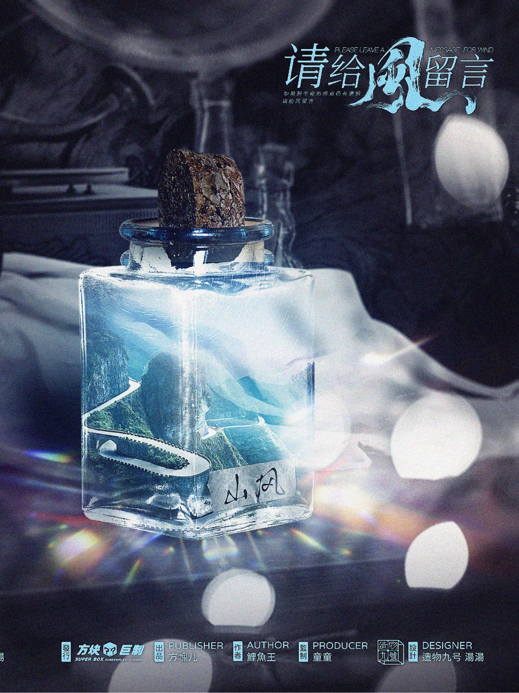

海風
男｜陽光乾淨、純真，受人保護
聽說人的遺憾不會消失，它被風妥貼蒐集起來。
等有一天，那些滿心遺憾而不肯離去的遺留者，會等風來的那一刻，遺憾也終將被釋懷。
所以，如果生命走到終點，尚有遺憾，請給風留言，我們會在聽風事務所回應你的呼喚。
男｜陽光乾淨、純真，受人保護

男｜憨厚、耿直、校草，別人家的好孩子
男｜直球大直男，狂妄大爺們
女｜做事俐落、有主見，追求浪漫和儀式感
女｜溫柔內斂、溫吞，不善言語，總是淺淺地笑
女｜善良、頹喪，一副沒什麼好失去的樣子
女｜大大咧咧、講義氣、強勢
以上為每人價格，預約場次請洽晨諾劇本官方 LINE。
透過 LINE 預約